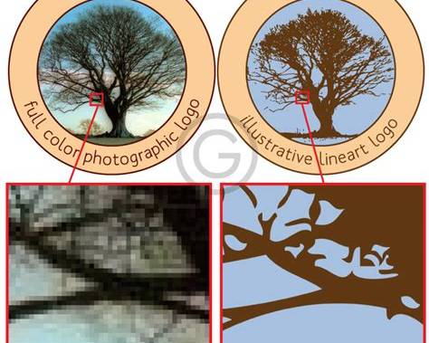

Compressie betekent dat je een bestand kleiner maakt. Hierdoor neemt het minder opslagruimte in en kan het sneller worden verstuurd. Bij bijvoorbeeld afbeeldingen kan compressie ervoor zorgen dat de bestandsgrootte kleiner wordt.
Er zijn twee soorten compressie. Bij lossy compressie wordt informatie verwijderd, waardoor een bestand kleiner wordt maar de kwaliteit iets achteruit kan gaan. Lossless compressie maakt een bestand kleiner zonder informatie te verwijderen.
Een bitmapafbeelding bestaat uit veel kleine puntjes, ook wel pixels genoemd. Elke pixel heeft een eigen kleur. Hoe meer pixels een afbeelding heeft, hoe scherper deze meestal is. Als je een bitmapafbeelding sterk vergroot, kunnen de losse pixels zichtbaar worden.
Een vectorafbeelding bestaat uit vormen in plaats van pixels. Van deze vormen worden bijvoorbeeld de vorm, locatie, grootte en kleur opgeslagen. Een voordeel is dat je een vectorafbeelding groter of kleiner kunt maken zonder dat de afbeelding onscherp wordt.

Geluid kan ook digitaal worden opgeslagen. Een microfoon zet geluid om in een elektrisch signaal. Een computer zet dit signaal om in digitale waarden. Dit proces heet samplen. De computer meet op vaste momenten hoe sterk het geluid is. Hoe meer samples per seconde worden genomen, hoe nauwkeuriger het opgeslagen geluid is. Het aantal samples per seconde heet de sample rate.